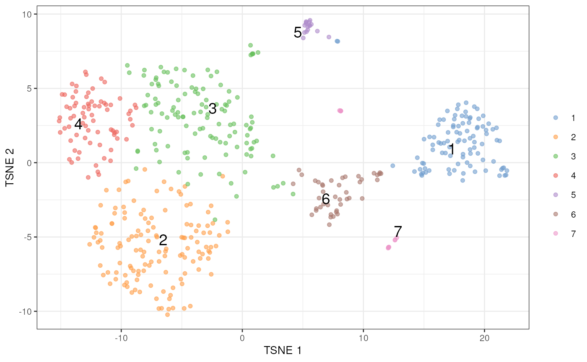

Detecting clusters of doublet cells with DE analyses
Aaron Lun
infinite.monkeys.with.keyboards@gmail.com2026-06-23
Source:vignettes/findDoubletClusters.Rmd
findDoubletClusters.Rmdtl;dr
To demonstrate, we’ll use one of the mammary gland datasets from the scRNAseq package. We will subset it down to a random set of 500 cells for speed.
library(scRNAseq)
sce <- BachMammaryData(samples="G_2")For the purposes of this demonstration, we’ll perform an extremely expedited analysis. One would usually take more care here and do some quality control, create some diagnostic plots, etc., but we don’t have the space for that.
set.seed(123)
library(scrapper)
sce <- scrapper::analyze.se(sce)$x
library(scater)
plotTSNE(sce, colour_by="graph.cluster", text_by="graph.cluster")
We then run findDoubletClusters() to test each cluster
against the null hypothesis that it does consist of doublets.
The null is rejected if a cluster has many DE genes that lie outside the
expression limits defined by the “source” clusters. On the other hand,
if num.de is low, the cluster’s expression profile is
consistent with the doublet hypothesis.
library(scDblFinder)
tab <- findDoubletClusters(sce, sce$graph.cluster)
tab## DataFrame with 6 rows and 9 columns
## source1 source2 num.de median.de best p.value
## <character> <character> <integer> <numeric> <character> <numeric>
## 3 5 1 0 170.0 ENSMUSG00000074476 1.00000e+00
## 4 3 2 21 32.5 ENSMUSG00000061937 1.79860e-09
## 1 4 3 40 67.5 ENSMUSG00000067274 2.00290e-05
## 6 5 3 138 143.5 ENSMUSG00000024610 6.86176e-13
## 5 6 3 236 763.5 ENSMUSG00000061527 3.43990e-13
## 2 4 3 248 435.0 ENSMUSG00000040204 2.82895e-13
## lib.size1 lib.size2 prop
## <numeric> <numeric> <numeric>
## 3 0.516328 0.556768 0.102
## 4 1.610403 1.770622 0.196
## 1 1.115298 1.796079 0.176
## 6 1.045945 2.025736 0.032
## 5 0.956073 1.936753 0.200
## 2 0.564773 0.909513 0.294Mathematical background
Consider a cell population that has mean transcript count for gene . Assume that each population exhibits a unique scaling bias , representing the efficiency of library preparation for that population. The observed read/UMI count for each gene is then . (For simplicity, we will ignore gene-specific scaling biases, as this is easily accommodated by considering for some bias .) The expected total count for each population is .
Now, let us consider a doublet population that forms from two parent populations and . The observed read count for in is . Note that need not be any particular function of and . Rather, this relationship depends on how quickly the reverse transcription and amplification reagents are saturated during library preparation, which is difficult to make assumptions around.
Normalization by library size
We obtain log-normalized expression values for each cell based on the library size. Assume that the library size-normalized expression values are such that , i.e., the proportion of increases in compared to . The contribution of each cancels out, yielding The normalized expression value of the doublet cluster is subsequently and it is fairly easy to show that In other words, the expected library size-normalized expression of our gene in the doublet cluster lies between that of the two parents.
It is harder to provide theoretical guarantees with arbitrary size factors, which is why we only use the library sizes for normalization instead. The exception is that of spike-in size factors that would estimate directly. This would allow us to obtain estimates of for the parent clusters and of for the doublets. In this manner, we could more precisely identify doublet clusters as those where the normalized expression value is equal to the sum of the parents. Unfortunately, spike-ins are generally not available for droplet-based data sets where doublets are most problematic.
Testing for (lack of) intermediacy
We want to identify the clusters that may be comprised of doublets of other clusters. For each cluster , we test for differential expression in the library size-normalized expression profiles against every other cluster . For each pair of other clusters and , we identify genes that change in against both and in the same direction. The presence of such genes violates the intermediacy expected of a doublet cluster and provides evidence that is not a doublet of and .
Significant genes are identified by an intersection-union test on the -values from the pairwise comparisons between and or . The -value for a gene is set to unity when the signs of the log-fold changes are not the same between comparisons. Multiple correction testing is applied using the Benjamini-Hochberg method, and the number of genes detected at a specified false discovery rate (usually 5%) is counted. The pair with the fewest detected genes are considered as the putative parents of .
In theory, it is possible to compute the Simes’ combined -value across all genes to reject the doublet hypothesis for . This would provide a more rigorous approach to ruling out potential doublet/parent combinations. However, this is very sensitive to misspecification of clusters – see below.
Calling doublet clusters
Assuming that most clusters are not comprised of doublets, we identify clusters that have an unusually low number of detected genes that violate the intermediacy condition. This is achieved by identifying small outliers on the log-transformed number of detected genes, using the median absolute deviation-based method in the function. (We use a log-transformation simply to improve resolution at low values.) Clusters are likely to be doublets if they are outliers on this metric.
Doublet clusters should also have larger library sizes than the proposed parent clusters. This is consistent with the presence of more RNA in each doublet, though the library size of the doublet cluster need not be a sum of that of the parent clusters (due to factors such as saturation and composition effects). The proportion of cells assigned to the doublet cluster should also be “reasonable”; exactly what this means depends on the experimental setup and the doublet rate of the protocol in use.
Discussion
The biggest advantage of this approach lies in its interpretability. Given a set of existing clusters, we can explicitly identify those that are likely to be doublets. We also gain some insight onto the parental origins of each putative doublet cluster, which may be of some interest. We avoid any assumptions about doublet formation that are otherwise necessary for the simulation-based methods. In particular, we do not require any knowledge about exact the relationship between and , allowing us to identify doublets even when the exact location of the doublet is unknown (e.g., due to differences in RNA content between the parent clusters).
The downside is that, of course, we are dependent on being supplied
with sensible clusters where the parental and doublet cells are
separated. The intermediacy requirement is loose enough to provide some
robustness against misspecification, but this only goes so far. In
addition, this strategy has a bias towards calling clusters with few
cells as doublets (or parents of doublets) because the DE detection
power is low. This can be somewhat offset by comparing
num.de against median.de as latter will be low
for clusters involved in systematically low-powered comparisons, though
it is difficult to adjust for the exact effect of the differences of
power on the IUT.
Session information
## R version 4.6.0 (2026-04-24)
## Platform: x86_64-pc-linux-gnu
## Running under: Ubuntu 24.04.4 LTS
##
## Matrix products: default
## BLAS: /usr/lib/x86_64-linux-gnu/openblas-pthread/libblas.so.3
## LAPACK: /usr/lib/x86_64-linux-gnu/openblas-pthread/libopenblasp-r0.3.26.so; LAPACK version 3.12.0
##
## locale:
## [1] LC_CTYPE=en_US.UTF-8 LC_NUMERIC=C
## [3] LC_TIME=en_US.UTF-8 LC_COLLATE=en_US.UTF-8
## [5] LC_MONETARY=en_US.UTF-8 LC_MESSAGES=en_US.UTF-8
## [7] LC_PAPER=en_US.UTF-8 LC_NAME=C
## [9] LC_ADDRESS=C LC_TELEPHONE=C
## [11] LC_MEASUREMENT=en_US.UTF-8 LC_IDENTIFICATION=C
##
## time zone: Etc/UTC
## tzcode source: system (glibc)
##
## attached base packages:
## [1] stats4 stats graphics grDevices utils datasets methods
## [8] base
##
## other attached packages:
## [1] scDblFinder_1.27.5 scater_1.41.1
## [3] ggplot2_4.0.3 scuttle_1.23.1
## [5] scrapper_1.7.3 ensembldb_2.37.3
## [7] AnnotationFilter_1.37.0 GenomicFeatures_1.65.0
## [9] AnnotationDbi_1.75.0 scRNAseq_2.27.0
## [11] SingleCellExperiment_1.35.1 SummarizedExperiment_1.43.0
## [13] Biobase_2.73.1 GenomicRanges_1.65.0
## [15] Seqinfo_1.3.0 IRanges_2.47.2
## [17] S4Vectors_0.51.3 BiocGenerics_0.59.7
## [19] generics_0.1.4 MatrixGenerics_1.25.0
## [21] matrixStats_1.5.0 BiocStyle_2.41.0
##
## loaded via a namespace (and not attached):
## [1] RColorBrewer_1.1-3 jsonlite_2.0.0 magrittr_2.0.5
## [4] ggbeeswarm_0.7.3 gypsum_1.9.0 farver_2.1.2
## [7] rmarkdown_2.31 fs_2.1.0 BiocIO_1.23.3
## [10] ragg_1.5.2 vctrs_0.7.3 memoise_2.0.1
## [13] Rsamtools_2.29.0 RCurl_1.98-1.19 htmltools_0.5.9
## [16] S4Arrays_1.13.0 BiocBaseUtils_1.15.1 AnnotationHub_4.3.0
## [19] curl_7.1.0 BiocNeighbors_2.7.2 xgboost_3.2.1.1
## [22] Rhdf5lib_2.1.0 SparseArray_1.13.2 rhdf5_2.57.1
## [25] sass_0.4.10 alabaster.base_1.13.0 bslib_0.11.0
## [28] htmlwidgets_1.6.4 desc_1.4.3 alabaster.sce_1.13.0
## [31] httr2_1.2.2 cachem_1.1.0 GenomicAlignments_1.49.0
## [34] igraph_2.3.2 lifecycle_1.0.5 pkgconfig_2.0.3
## [37] rsvd_1.0.5 Matrix_1.7-5 R6_2.6.1
## [40] fastmap_1.2.0 digest_0.6.39 irlba_2.3.7
## [43] ExperimentHub_3.3.0 textshaping_1.0.5 RSQLite_3.53.1
## [46] beachmat_2.29.0 labeling_0.4.3 filelock_1.0.3
## [49] httr_1.4.8 abind_1.4-8 compiler_4.6.0
## [52] bit64_4.8.2 withr_3.0.2 S7_0.2.2
## [55] BiocParallel_1.47.0 viridis_0.6.5 DBI_1.3.0
## [58] HDF5Array_1.41.0 alabaster.ranges_1.13.0 alabaster.schemas_1.13.0
## [61] MASS_7.3-65 rappdirs_0.3.4 DelayedArray_0.39.3
## [64] bluster_1.23.0 rjson_0.2.23 tools_4.6.0
## [67] vipor_0.4.7 otel_0.2.0 beeswarm_0.4.0
## [70] glue_1.8.1 h5mread_1.5.0 restfulr_0.0.17
## [73] rhdf5filters_1.25.0 grid_4.6.0 cluster_2.1.8.2
## [76] gtable_0.3.6 data.table_1.18.4 BiocSingular_1.29.0
## [79] ScaledMatrix_1.21.0 XVector_0.53.0 ggrepel_0.9.8
## [82] BiocVersion_3.24.0 pillar_1.11.1 dplyr_1.2.1
## [85] BiocFileCache_3.3.0 lattice_0.22-9 rtracklayer_1.73.0
## [88] bit_4.6.0 tidyselect_1.2.1 Biostrings_2.81.3
## [91] knitr_1.51 gridExtra_2.3 bookdown_0.46
## [94] ProtGenerics_1.45.0 xfun_0.58 UCSC.utils_1.9.0
## [97] lazyeval_0.2.3 yaml_2.3.12 evaluate_1.0.5
## [100] codetools_0.2-20 cigarillo_1.3.0 tibble_3.3.1
## [103] alabaster.matrix_1.13.0 BiocManager_1.30.27 cli_3.6.6
## [106] systemfonts_1.3.2 jquerylib_0.1.4 Rcpp_1.1.1-1.1
## [109] GenomeInfoDb_1.49.1 dbplyr_2.5.2 png_0.1-9
## [112] XML_3.99-0.23 parallel_4.6.0 pkgdown_2.2.0
## [115] blob_1.3.0 bitops_1.0-9 viridisLite_0.4.3
## [118] alabaster.se_1.13.0 scales_1.4.0 purrr_1.2.2
## [121] crayon_1.5.3 rlang_1.2.0 KEGGREST_1.53.0